优先看 35、36，37 为简单直路对照。上排 Base、下排 SARA；左列 2 秒、右列 4 秒。所有子图固定初始坐标与尺度。这里只展示已记录的 4 秒，不代表更长时段结果。
修改 plot_cases.py 顶部 STYLE 后重新生成。完整说明与逐例局限 · 数值汇总
2–4 秒行驶距离：Base 0.45 m，SARA 9.08 m。两边累计后向位移均为 0。
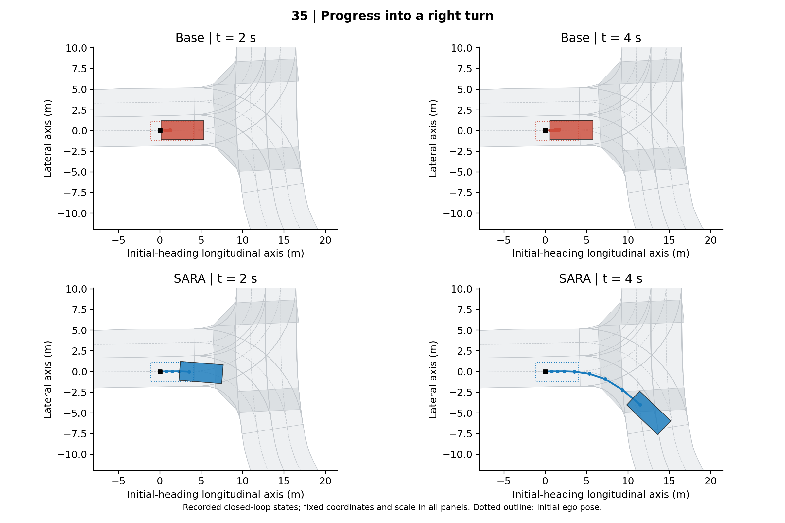
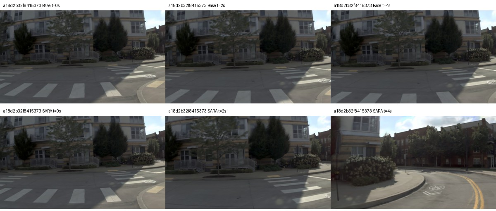
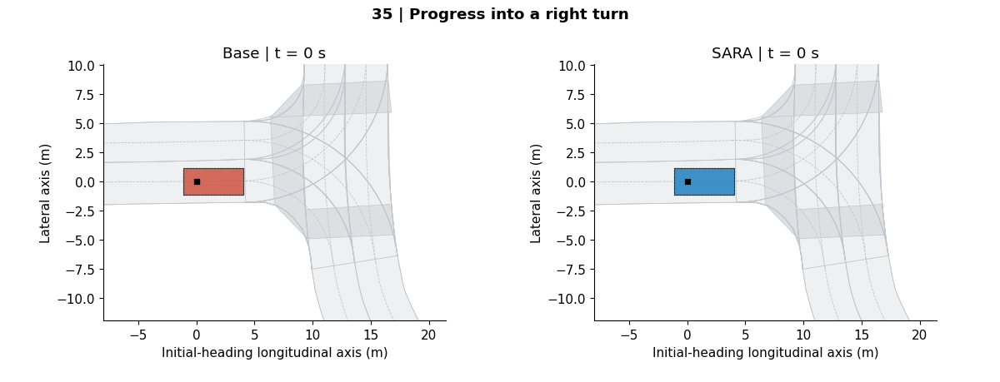
2–4 秒行驶距离：Base 3.35 m，SARA 10.90 m。两边累计后向位移均为 0。
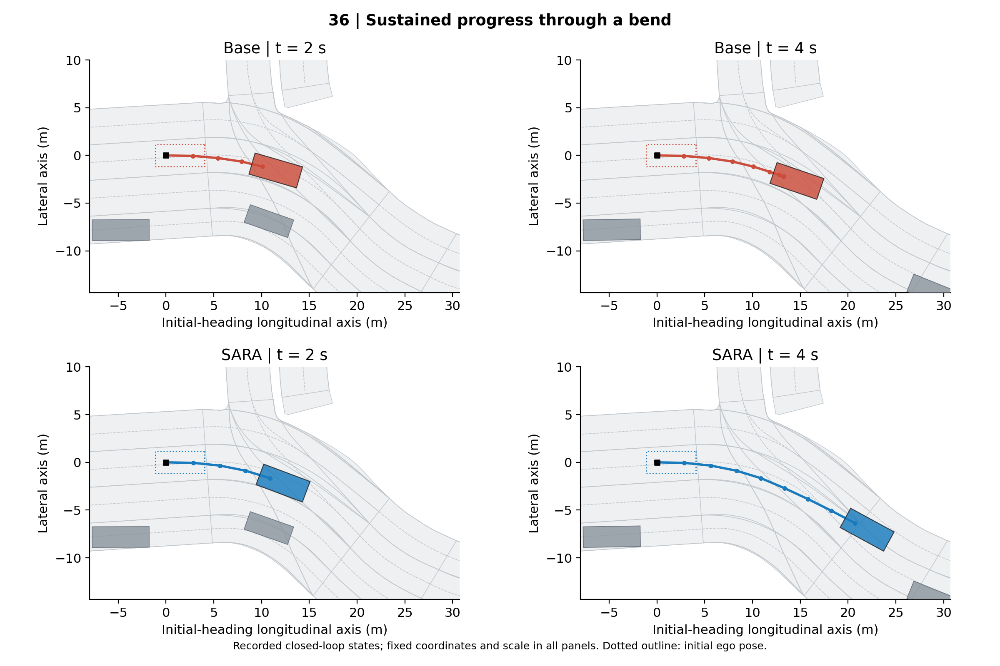
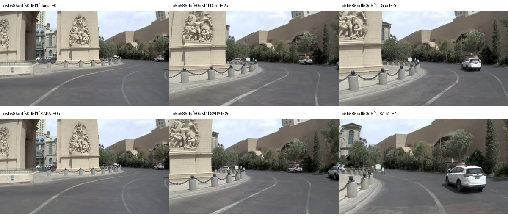
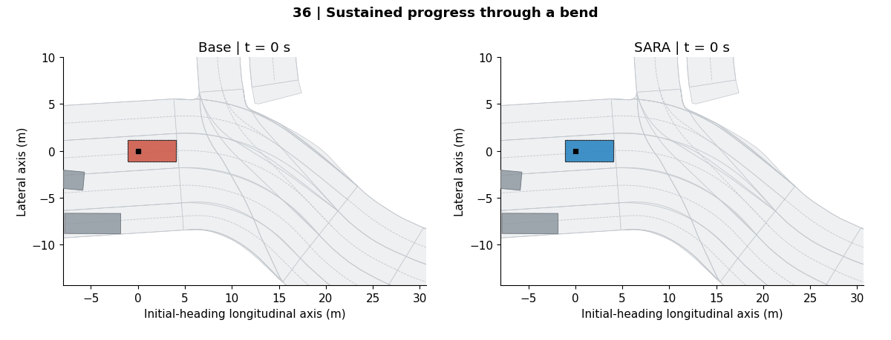
2–4 秒行驶距离：Base 3.81 m，SARA 14.27 m。两边累计后向位移均为 0。
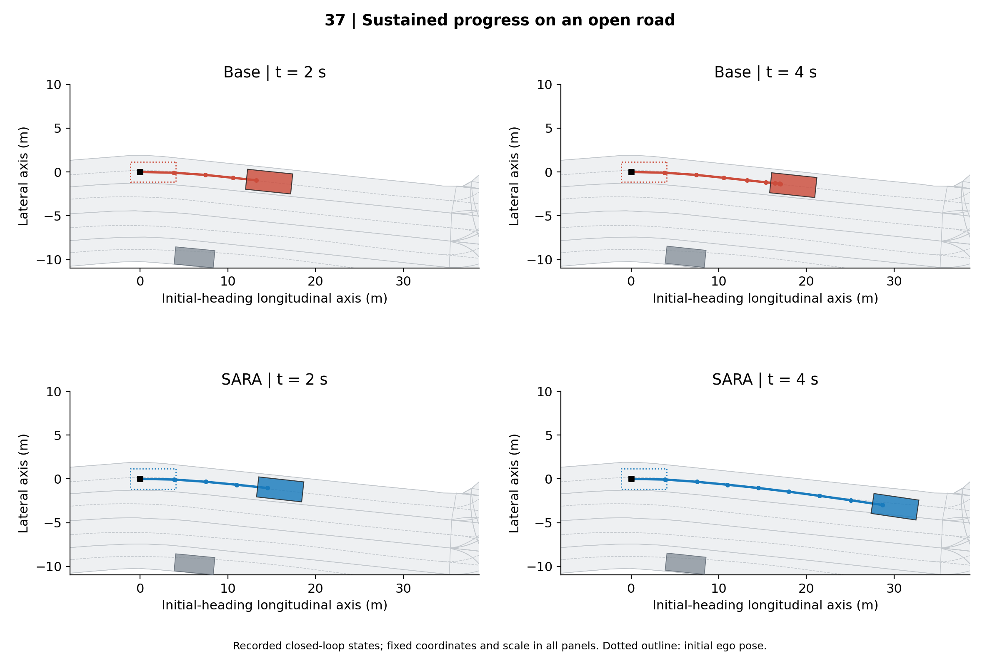
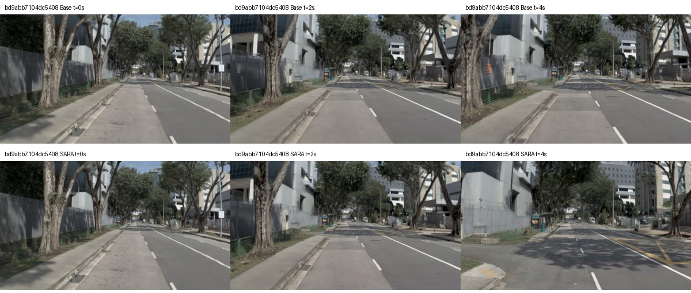
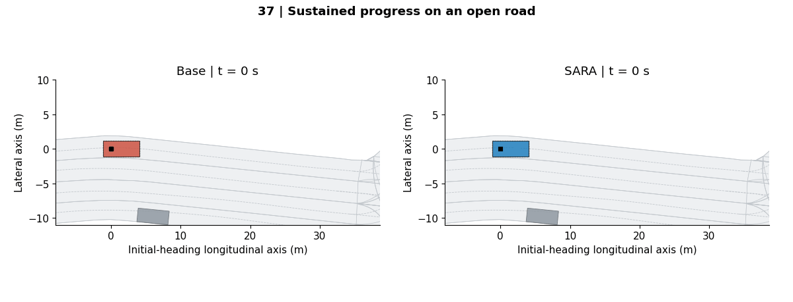
2–4 秒行驶距离：Base 5.35 m，SARA 10.74 m。两边累计后向位移均为 0。
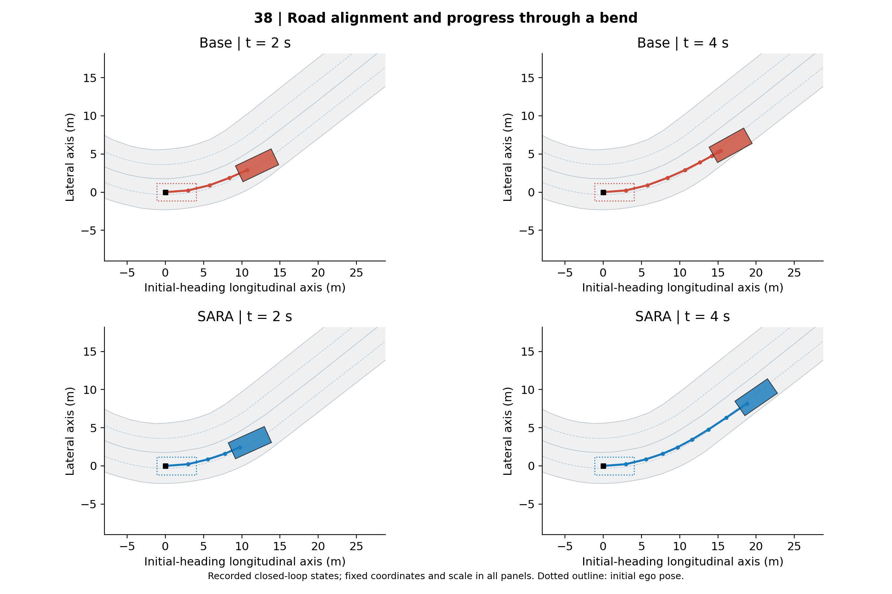
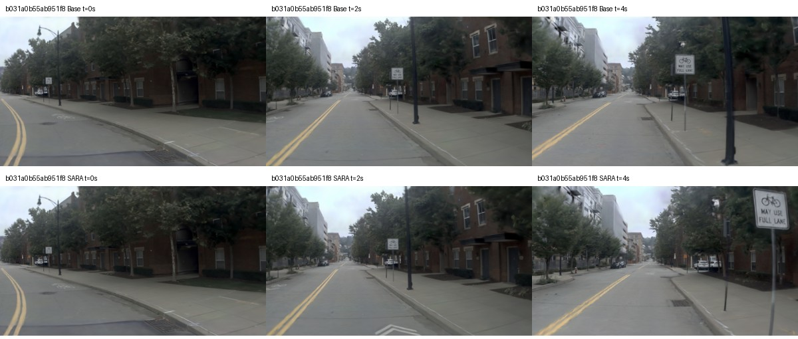
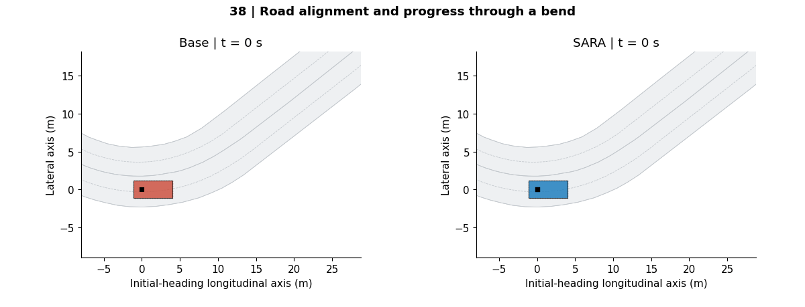
2–4 秒行驶距离：Base 1.85 m，SARA 16.19 m。两边累计后向位移均为 0。
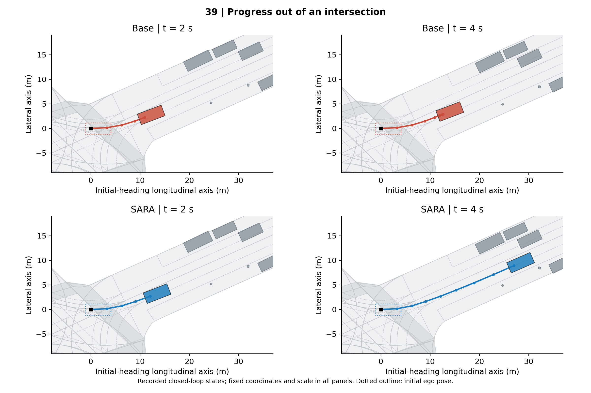
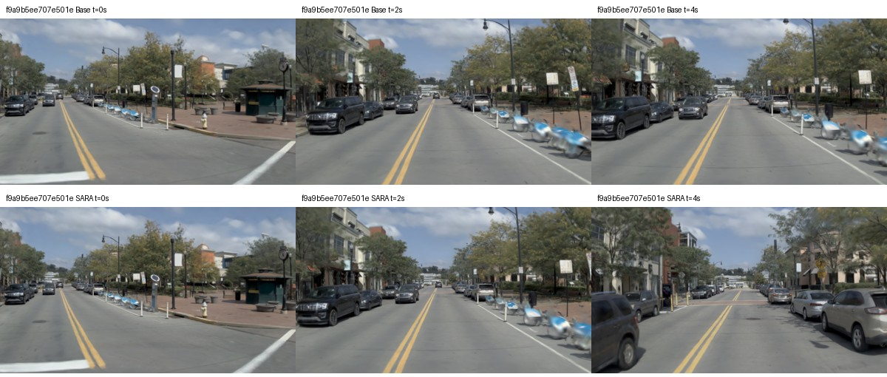
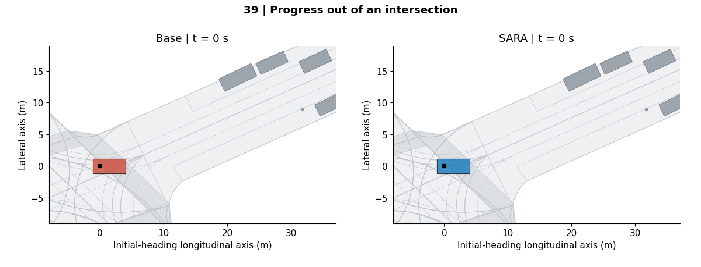